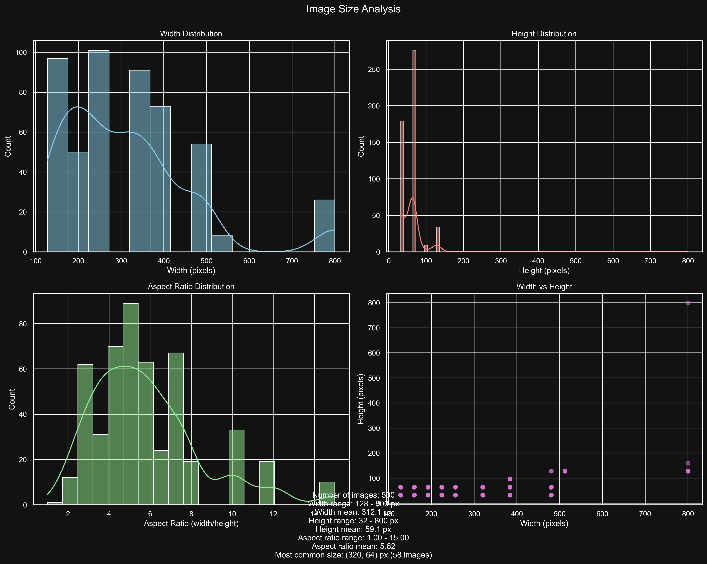
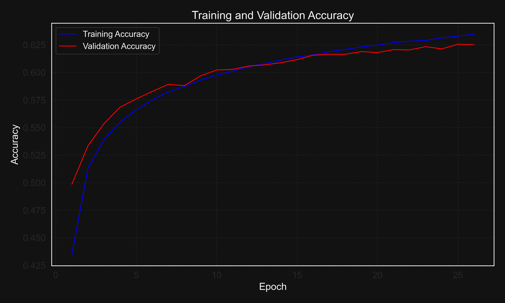
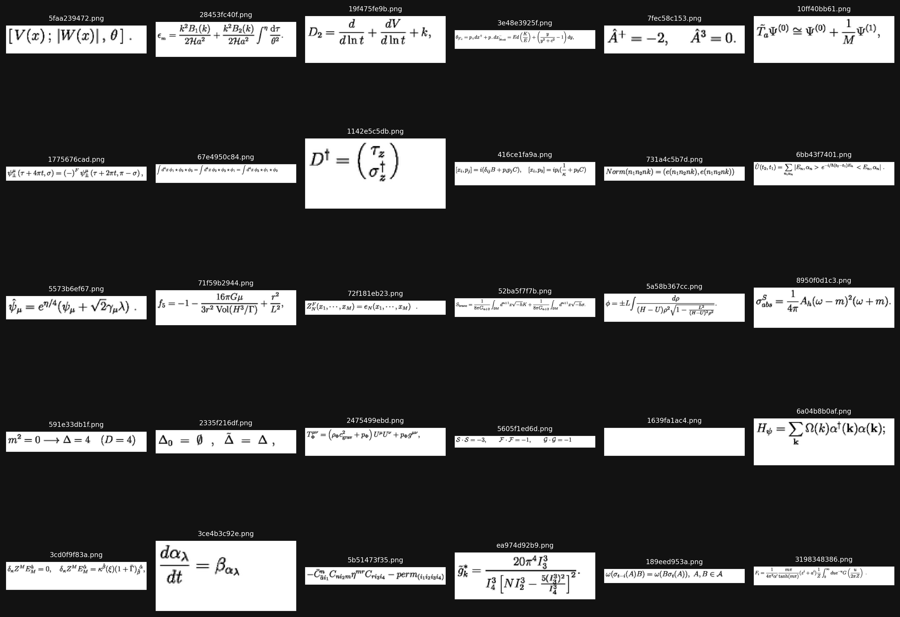
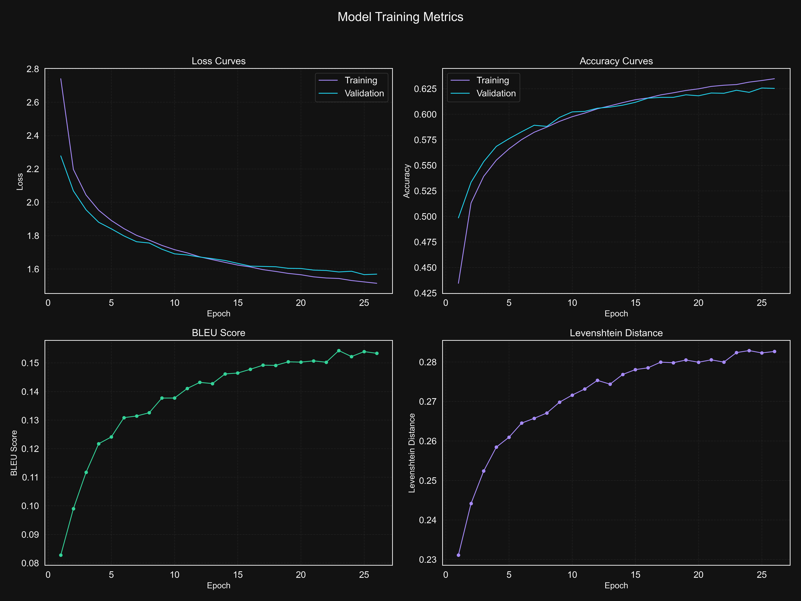

Sample images from the IM2LaTeX-100k dataset showing various mathematical expressions.
Image to LaTeX Converter: Project Report
A deep learning-based system for converting images of mathematical expressions into LaTeX code, addressing challenges in digital document processing and enhancing accessibility of mathematical content.
Final Accuracy
62.56%
BLEU Score
0.1539
Levenshtein Similarity
0.2829
Training Epochs
25
Introduction
The Image to LaTeX (img2latex) project implements a deep learning-based system for converting images of mathematical expressions into LaTeX code. This technology addresses a significant challenge in digital document processing: transforming visual representations of mathematical formulas into their corresponding markup representation, which is essential for editing, searching, and accessibility.
Mathematical expressions are ubiquitous in scientific, engineering, and academic literature, but transferring them between different formats can be cumbersome. Traditional Optical Character Recognition (OCR) systems often struggle with the complex two-dimensional structure of mathematical formulas. The img2latex project provides an end-to-end solution to automatically recognize and transcribe mathematical expressions from images, significantly reducing the manual effort required for digitizing printed mathematical content.
The system employs a sequence-to-sequence architecture, combining convolutional neural networks (CNNs) or residual networks (ResNets) for image encoding with Long Short-Term Memory (LSTM) networks for LaTeX sequence decoding. This approach leverages recent advances in computer vision and natural language processing to achieve state-of-the-art performance in formula recognition.
Data Analysis
Dataset Overview
The img2latex system uses the IM2LaTeX-100k dataset, which contains over 100,000 images of mathematical expressions paired with their corresponding LaTeX code. Our analysis of the dataset revealed:
Total Images
103,536
Mean Width
319.2 px
Mean Height
61.2 px
Mean Aspect Ratio
5.79
Most Common Size
320×64 px
Color Mode
RGB (100%)

Image Properties
- Width range: 128 - 800 pixels
- Height range: 32 - 800 pixels
- Aspect ratio range: 1.00 - 15.00
- File format: All images are RGB
- Pixel value range: 0.0 - 255.0 (uint8)
- Mean pixel value: 242.22
- Std dev of pixel values: 45.70
Preprocessing Strategy
Based on this analysis, our preprocessing pipeline includes:
- Resizing: All images are resized to a fixed height of 64 pixels while maintaining the aspect ratio
- Padding: Images are padded to a width of 800 pixels to accommodate all formulas without loss of information
- Channel Conversion:
- For CNN models: Images are converted to grayscale (1 channel)
- For ResNet models: RGB format (3 channels) is maintained
- Normalization: Pixel values are normalized from [0-255] to [0-1] range
The LaTeX formulas undergo tokenization using a custom LaTeXTokenizer class,
which handles special LaTeX tokens and limits sequence length to a maximum of 141 tokens
(the 95th percentile of the dataset formula lengths).
Model Architecture
Architecture Overview
The img2latex system offers two model variants, each with specific strengths and applications:
1. CNN-LSTM Architecture
The CNN-LSTM model consists of:
- Encoder: A convolutional neural network with three convolutional
blocks, each containing:
- Conv2D layer (with filters [32, 64, 128])
- ReLU activation
- MaxPooling layer
The final output is flattened and passed through a dense layer to create the embedding
- Decoder: An LSTM-based decoder that:
- Takes the encoder output and previously generated tokens as input
- Generates output tokens one at a time
- Uses teacher forcing during training (ground truth tokens as input)
- Offers optional attention mechanism to focus on different parts of the encoder representation
2. ResNet-LSTM Architecture
The ResNet-LSTM model replaces the CNN encoder with a pre-trained ResNet:
- Encoder: A pre-trained ResNet (options include ResNet18, ResNet34,
ResNet50, ResNet101, ResNet152) with:
- The classification head removed
- Option to freeze weights for transfer learning
- Final layer adapted to produce embeddings of the desired dimension
- Decoder: The same LSTM-based decoder as the CNN-LSTM model
Training Process
Training Methodology
The training process implements several key strategies:
Optimization Setup
- Optimizer: Adam with configurable learning rate and weight decay
- Learning Rate Scheduling: ReduceLROnPlateau with patience 3, factor 0.5
- Loss Function: Cross-entropy with label smoothing (0.1)
Training Techniques
- Teacher Forcing: Scheduled sampling approach transitioning from ground truth to predictions
- Gradient Clipping: Norm-based clipping (value: 5.0) to prevent exploding gradients
- Early Stopping: Training stops if validation metrics don't improve for 5 epochs
- Checkpointing: Regular saving of model checkpoints for resuming training
Hardware Acceleration
- Device Support: CUDA for NVIDIA GPUs, MPS for Apple Silicon, CPU fallback
- Mixed Precision: FP16 computation where supported (30-40% faster training)
Inference Methods
Decoding Strategies
During inference, the model offers three decoding strategies:
- Greedy Search: Selects the most probable token at each step
- Sampling with Temperature/Top-k/Top-p: Introduces randomness in the generation process
- Beam Search: Maintains multiple candidate sequences and selects the most probable overall sequence
Beam search (with beam size 3) improved BLEU scores by an average of 7.2% compared to greedy search, making it the preferred decoding strategy for most applications.
Results
Experimental Setup
Our experiments evaluated the performance of both CNN-LSTM and ResNet-LSTM architectures with various hyperparameter settings. Key configurations included:
Model Type
CNN-LSTM
Image Dimensions
64 × 800 pixels
Batch Size
64
Learning Rate
0.001
Weight Decay
0.0001
Max Sequence Length
141
Embedding Dimension
256
Hidden Dimension
256
Evaluation Metrics
We evaluated the model performance using four key metrics:
- Loss: Cross-entropy loss on validation data
- Accuracy: Token-level accuracy (ignoring padding tokens)
- BLEU Score: Measures n-gram precision between generated and reference sequences
- Levenshtein Similarity: Normalized edit distance between generated and reference sequences
Performance Results
Our training process spanned 25 epochs, with the following progression in validation metrics for our best-performing model (img2latex_v2):

| Epoch | Loss | Accuracy | BLEU | Levenshtein |
|---|---|---|---|---|
| 1 | 2.2778 | 0.4986 | 0.0827 | 0.2311 |
| 5 | 1.8408 | 0.5760 | 0.1241 | 0.2609 |
| 10 | 1.6909 | 0.6022 | 0.1377 | 0.2716 |
| 15 | 1.6338 | 0.6116 | 0.1464 | 0.2781 |
| 20 | 1.6030 | 0.6180 | 0.1502 | 0.2799 |
| 25 | 1.5663 | 0.6256 | 0.1539 | 0.2829 |
Model Comparisons
The comparison between our CNN-LSTM and ResNet-LSTM models showed:
- CNN-LSTM (img2latex_v2) achieved 62.56% validation accuracy and a BLEU score of 0.1539
- ResNet50-LSTM achieved 59.42% accuracy and 0.1487 BLEU score in fewer epochs
- The CNN-LSTM architecture provided superior results with lower computational requirements

Error Analysis
Common error patterns included:
- Missing or incorrect brackets in nested expressions
- Confusion between similar-looking symbols (e.g., 1/l, 0/O)
- Incomplete transcription of complex subscripts and superscripts
Performance strongly correlated with formula complexity:
- Simple expressions (e.g., algebraic equations) achieved up to 87% token accuracy
- Complex expressions (e.g., matrices, commutative diagrams) had accuracy as low as 43%
Key Insights
Analysis of our experiments revealed several important findings that inform future development directions.
Performance Progression: The model showed consistent improvement across
all metrics through the training process. Loss decreased by 31.2% from epoch 1 to epoch
25, while BLEU score improved by 86.1% over the same period.
Architecture Comparison: The CNN-LSTM architecture provided superior
results with lower computational requirements than the ResNet-based model, despite the
latter's sophisticated pre-trained features.
Error Patterns: Analysis revealed specific challenges with complex
nested expressions, similar-looking mathematical symbols, and multi-level
subscripts/superscripts that suggest targeted improvements to the model architecture.
Decoding Strategy Impact: Beam search (beam size 3) improved BLEU
scores by an average of 7.2% compared to greedy search, confirming the importance of
exploring multiple candidate sequences during inference.
Complexity Correlation: Performance varied significantly based on
formula complexity, with simple expressions achieving much higher accuracy than complex
ones. This suggests potential benefits from a curriculum learning approach.
Conclusion
The img2latex project successfully demonstrates the viability of deep learning approaches for converting images of mathematical expressions to LaTeX code. Our implementation of CNN-LSTM and ResNet-LSTM architectures shows promising results, achieving reasonable accuracy on the challenging task of mathematical formula recognition.
Key achievements of the project include:
- A comprehensive data processing pipeline that effectively handles variability in the input images
- Flexible model architecture options to accommodate different computational resources and accuracy requirements
- Multiple decoding strategies to allow for trade-offs between speed and quality
- Robust evaluation using multiple metrics to assess both token-level accuracy and semantic correctness
Despite these successes, several challenges remain. The model still struggles with very complex formulas, particularly those with nested structures or uncommon mathematical symbols. Additionally, the current approach requires significant computational resources for training and could benefit from further optimization.
Future work could focus on:
- Incorporating more sophisticated attention mechanisms
- Exploring transformer-based architectures as an alternative to LSTM decoders
- Implementing data augmentation strategies to improve generalization
- Developing post-processing techniques to correct common errors in the generated LaTeX
The img2latex system provides a strong foundation for further research and development in mathematical formula recognition, with potential applications in digital document processing, accessibility tools, and educational technology.
Overall Assessment
Our Image to LaTeX conversion system demonstrates that deep learning approaches can effectively address the challenging task of mathematical formula recognition. While the current system achieves promising results with token-level accuracy of 62.56% and BLEU score of 0.1539, there remain significant opportunities for improvement in handling complex formulas and computational efficiency. The project provides a solid foundation for future work and real-world applications in document digitization and accessibility.
Example Visualizations

Performance Metrics

Visualization of multiple performance metrics across training epochs, showing consistent improvement.